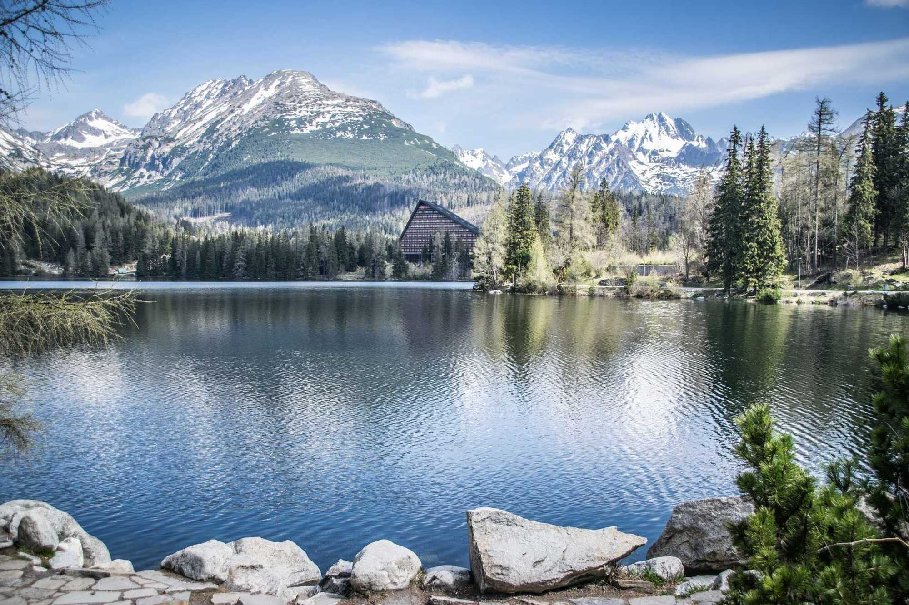
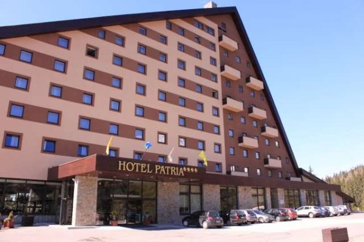
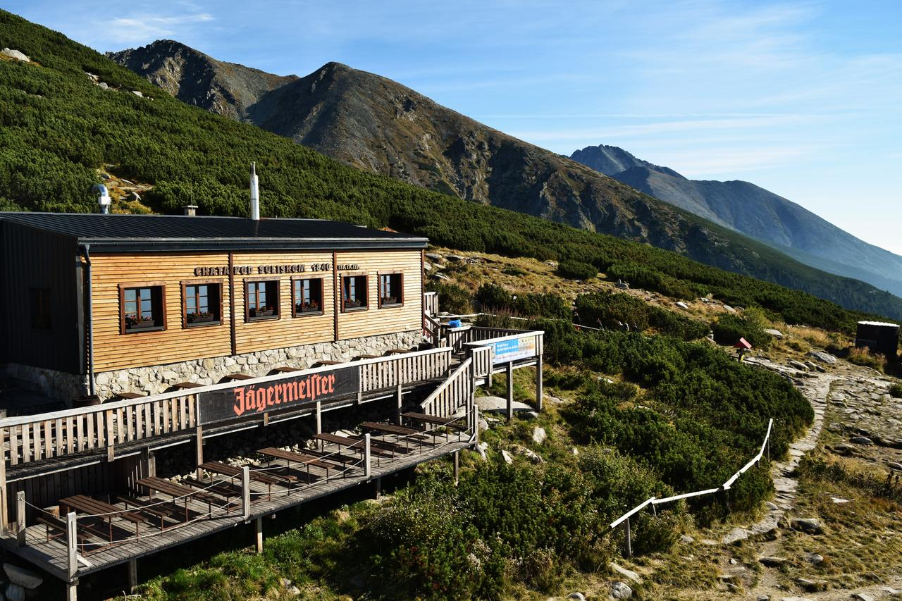
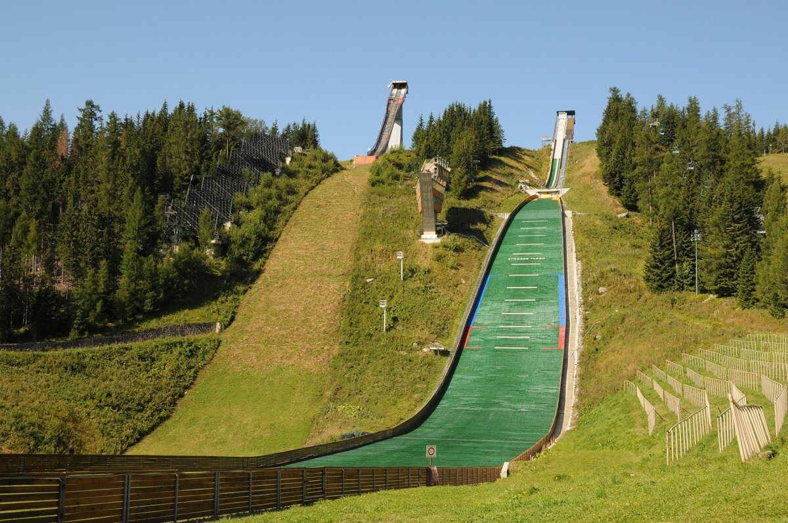
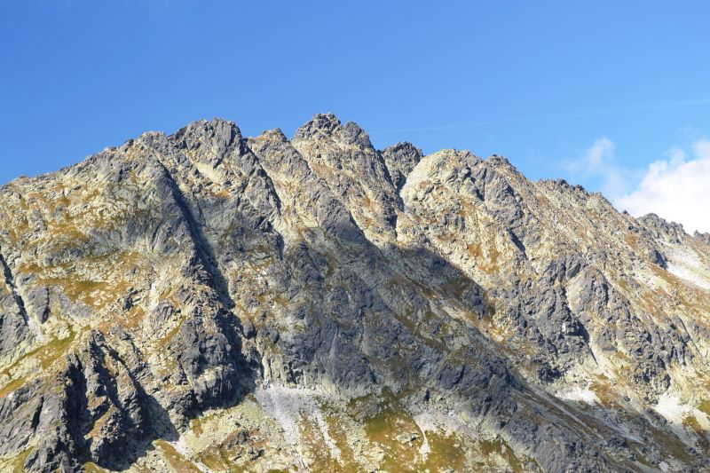

Štrbské pleso 1346 m
Má hĺbku 20 metrov. Priemerne 155 dní v roku je pokryté ľadom. Zaujímavosťou je, že jeho zamrznutá hladina bola v roku 1925 svedkom majstrovstiev sveta v ľadovom hokeji.
Hotel Patria
Exkluzívny wellness hotel pri Štrbskom Plese s najkrajším výhľadom na Vysoké Tatry. Hotel PATRIA **** pre Vás ukrýva pestrú mozaiku prekvapení.
Predné Solisko - 2 093 m
Predné Solisko je jeden z najnižších a najľahšie dostupných vrchov vo Vysokých Tatrách. Z vrchu je nádherný výhľad na okolité vrchy, npar. Kriváň, ale aj na Nízke Tatry. Pod vrcholom sa nachádza Chata pod Soliskom.
Skokanský mostík
Dnes už nefunkčný skokanský mostík. Zatiaľ poslednú súťaž na veľkom mostíku mohli návštevníci Štrbského Plesa vidieť v januári 1999 počas Svetovej zimnej univerziády.
Satan - 2421 m
Satan je najvyšší vrch Hrebeňa bášt (2 421,5 m n. m.) vo Vysokých Tatrách. V ľudových legendách o tunajších vrchoch, podľa ktorých Satan stráži ukryté poklady a vzácne kovy a na odvážlivcov, ktorí sa ich snažia vykopať zhadzuje kamene.
{kind=link}